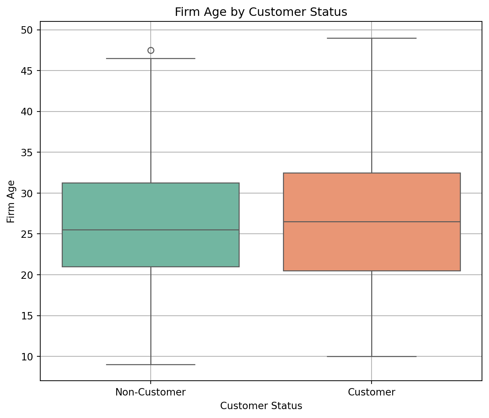

Blueprinty is a small firm that makes software for developing blueprints specifically for submitting patent applications to the US patent office. Their marketing team would like to make the claim that patent applicants using Blueprinty’s software are more successful in getting their patent applications approved. Ideal data to study such an effect might include the success rate of patent applications before using Blueprinty’s software and after using it. Unfortunately, such data is not available.
However, Blueprinty has collected data on 1,500 mature (non-startup) engineering firms. The data include each firm’s number of patents awarded over the last 5 years, regional location, age since incorporation, and whether or not the firm uses Blueprinty’s software. The marketing team would like to use this data to make the claim that firms using Blueprinty’s software are more successful in getting their patent applications approved.
Data
We read in the dataset for Blueprinty and view the first 5 rows of data to understand what our data contains:
import numpy as npimport pandas as pdfrom scipy.stats import timport statsmodels.formula.api as smfimport matplotlib.pyplot as pltimport seaborn as snsimport statsmodels.api as smfrom scipy.optimize import minimize_scalarfrom scipy.optimize import minimizefrom numpy.linalg import invfrom scipy.optimize import minimize, approx_fprimeimport patsyimport warningsfrom scipy.special import gammalnfrom statsmodels.genmod.families import Poissonwarnings.filterwarnings('ignore')blueprinty_data = pd.read_csv('blueprinty.csv')blueprinty_data.head(5)
patents
region
age
iscustomer
0
0
Midwest
32.5
0
1
3
Southwest
37.5
0
2
4
Northwest
27.0
1
3
3
Northeast
24.5
0
4
3
Southwest
37.0
0
We build compute the mean of number of patents by customer status (i.e., customers and non-customers):
blueprinty_data['iscustomer'] = blueprinty_data['iscustomer'].astype('category')mean_patents = blueprinty_data.groupby('iscustomer', observed=True)['patents'].mean()print("Mean number of patents by customer status:")print(mean_patents.rename(index={0: 'Non-Customer', 1: 'Customer'}))
Mean number of patents by customer status:
iscustomer
Non-Customer 3.473013
Customer 4.133056
Name: patents, dtype: float64
The average number of patents for non-customers is 3.473013 while the average number of patents for customers is 4.133056.
Next, we build and compare histograms for non-customers and customers:
The histograms reveal that both customers and non-customers exhibit right-skewed distributions in the number of patents, with most firms having relatively few patents and fewer firms achieving higher counts. Customers tend to cluster more heavily around the 0 to 4 patent range. Both customers and non-customers have long tails, indicating that while most firms have few patents, there are a small number of firms with a very high number of patents. The distribution for non-customers is slightly more concentrated around the lower patent counts compared to customers, suggesting that blueprinty could be effective in generating achieving patents.
Customers tend to have a higher number of patents than non-customers (as seen by a higher mean: 4.13 for customers and 3.47 for non-customers), with a noticeable increase in the 5 to 10 patent range, with customers having higher density in this range.
Blueprinty customers are not selected at random. It may be important to account for systematic differences in the age and regional location of customers vs non-customers.
blueprinty_data['region'] = blueprinty_data['region'].astype('category')region_counts = blueprinty_data.groupby('iscustomer', observed=True)['region'].value_counts(normalize=True).unstack()print("Proportion of firms by region and customer status:")print(region_counts.rename(index={0: 'Non-Customer', 1: 'Customer'}))print()region_plot_data = blueprinty_data.copy()region_plot_data['iscustomer'] = region_plot_data['iscustomer'].map({0: 'Non-Customer', 1: 'Customer'})plt.figure(figsize=(7, 6))sns.countplot(data=region_plot_data, x='region', hue='iscustomer')plt.title('Region Distribution by Customer Status')plt.xlabel('Region')plt.ylabel('Count')plt.legend(title='Customer Status')plt.grid(True)plt.tight_layout()plt.show()age_summary = blueprinty_data.groupby('iscustomer', observed=True)['age'].describe()print("Summary of firm age by customer status:")print(age_summary.rename(index={0: 'Non-Customer', 1: 'Customer'}))print()plt.figure(figsize=(7, 6))sns.boxplot(data=blueprinty_data, x='iscustomer', y='age', palette='Set2')plt.xticks([0, 1], ['Non-Customer', 'Customer'])plt.title('Firm Age by Customer Status')plt.xlabel('Customer Status')plt.ylabel('Firm Age')plt.grid(True)plt.tight_layout()plt.show()
Proportion of firms by region and customer status:
region Midwest Northeast Northwest South Southwest
iscustomer
Non-Customer 0.183513 0.267910 0.155054 0.153091 0.240432
Customer 0.076923 0.681913 0.060291 0.072765 0.108108
Summary of firm age by customer status:
count mean std min 25% 50% 75% max
iscustomer
Non-Customer 1019.0 26.101570 6.945426 9.0 21.0 25.5 31.25 47.5
Customer 481.0 26.900208 7.814678 10.0 20.5 26.5 32.50 49.0

From the output, we observe notable regional differences between Blueprinty customers and non-customers. A large proportion of Blueprinty customers are concentrated in the Northeast region (approximately 68%), whereas non-customers are more evenly distributed across regions, with the Northeast representing only about 27% of them. In contrast, non-customers have substantially higher representation in regions like the Midwest, South, and Southwest, compared to customers.
I observe that the age distributions of firms using Blueprinty and those not using it are fairly similar, but with some subtle differences. The mean firm age is slightly higher for customers (26.9 years) than for non-customers (26.1 years), but the difference is small. Overall, the age distributions for customers and non-customers are very similar.
Estimation of Simple Poisson Model
Since our outcome variable of interest can only be small integer values per a set unit of time, we can use a Poisson density to model the number of patents awarded to each engineering firm over the last 5 years. We start by estimating a simple Poisson model via Maximum Likelihood.
We have the likelihood for_ \(Y \sim \text{Poisson}(\lambda)\) as follows:
We use the poisson_loglikelihood function that we programmed above to plot lambda on the horizontal axis and the likelihood (or log-likelihood) on the vertical axis for a range of lambdas:
Y_observed = blueprinty_data['patents'].valueslambda_values = np.linspace(0.1, 15, 300)log_likelihoods = [poisson_loglikelihood(lam, Y_observed) for lam in lambda_values]plt.figure(figsize=(7, 6))plt.plot(lambda_values, log_likelihoods, color='blue')plt.title('Poisson Log-Likelihood as a Function of λ')plt.xlabel('λ (Poisson Rate)')plt.ylabel('Log-Likelihood')plt.grid(True)plt.tight_layout()plt.show()
We compute:
lambda_mle = blueprinty_data['patents'].mean()print(f"MLE for λ (lambda): {lambda_mle:.4f}")
MLE for λ (lambda): 3.6847
We take the first derivative of the log-likelihood, set it equal to zero and solve for lambda:
Next, we extend our simple Poisson model to a Poisson Regression Model such that \(Y_i = \text{Poisson}(\lambda_i)\) where \(\lambda_i = \exp(X_i'\beta)\). The interpretation is that the success rate of patent awards is not constant across all firms (\(\lambda\)) but rather is a function of firm characteristics \(X_i\). Specifically, we will use the covariates age, age squared, region, and whether the firm is a customer of Blueprinty.
We update your likelihood or log-likelihood function with an additional argument to take in a covariate matrix X. Also change the parameter of the model from lambda to the beta vector:
def poisson_loglikelihood(beta, y, X): beta = np.asarray(beta) y = np.asarray(y) X = np.asarray(X) eta = X @ beta eta = np.clip(eta, -30, 30) mu = np.exp(eta) log_lik = np.sum(y * np.log(mu +1e-10) - mu - gammaln(y +1))return log_likdef neg_poisson_loglikelihood(beta, y, X):return-poisson_loglikelihood(beta, y, X)
Next, we use the function we just programmed along with Python’s sp.optimize() to find the MLE vector and the Hessian of the Poisson model with covariates:
The coefficients and standard errors for the beta parameter estimates are the same using the two different methods.
Interpretation of the results:
The coefficient for iscustomer (0.2076) translates to an approximate 23.4% increase in expected patent count:
\[
\exp(0.2076) - 1 \approx 0.234
\]
This means that firms using Blueprinty software receive ~23.4% more patents.
The analysis is observational. Without running an experiment to collect data, the results show association, not causation.
The intercept term has a coefficient of -0.5098 (standard error: 0.1815), which represents the baseline log count of patents when all predictors are zero, although it is not directly interpretable in isolation. Firm age shows a positive and statistically significant effect on patent output, with a coefficient of 0.1487 (standard error: 0.0137), indicating that older firms tend to receive more patents. However, this effect diminishes with age, as evidenced by the negative and significant coefficient on age squared (-0.0030, standard error: 0.0003), suggesting a nonlinear relationship where the benefit of age tapers off. Most notably, firms that are customers of Blueprinty software have a coefficient of 0.2076 (standard error: 0.0309), which is statistically significant and implies that, holding other factors constant, these firms receive approximately 23.4% more patents than non-customers. While regional dummy variables are included in the model, their coefficients are mixed in sign and not statistically significant, indicating that region does not have a meaningful impact on patent counts.
After fitting a Poisson regression model to predict patent counts based on firm characteristics, we simulated two scenarios for each firm: one where the firm is a Blueprinty customer (iscustomer = 1) and one where it is not (iscustomer = 0). Holding all other characteristics constant, we predicted the number of patents in each scenario.
The average difference in predicted patent counts between these two scenarios was 0.79 patents per firm.
This means that, on average, firms using Blueprinty’s software are expected to receive 0.79 more patents over five years than similar firms that do not use the software. It reinforces the statistical finding that Blueprinty’s software use is associated with improved patent outcomes.
AirBnB Case Study
Introduction
AirBnB is a popular platform for booking short-term rentals. In March 2017, students Annika Awad, Evan Lebo, and Anna Linden scraped of 40,000 Airbnb listings from New York City. The data include the following variables:
Variable Definitions
- `id` = unique ID number for each unit
- `last_scraped` = date when information scraped
- `host_since` = date when host first listed the unit on Airbnb
- `days` = `last_scraped` - `host_since` = number of days the unit has been listed
- `room_type` = Entire home/apt., Private room, or Shared room
- `bathrooms` = number of bathrooms
- `bedrooms` = number of bedrooms
- `price` = price per night (dollars)
- `number_of_reviews` = number of reviews for the unit on Airbnb
- `review_scores_cleanliness` = a cleanliness score from reviews (1-10)
- `review_scores_location` = a "quality of location" score from reviews (1-10)
- `review_scores_value` = a "quality of value" score from reviews (1-10)
- `instant_bookable` = "t" if instantly bookable, "f" if not
We perform some EDA on the dataset. The goal is to uncover patterns, trends, and relationships across numeric and categorical features, particularly focusing on review counts, pricing, and listing characteristics. :
airbnb_data = pd.read_csv('airbnb.csv')variables = ['number_of_reviews', 'price', 'room_type', 'bedrooms', 'bathrooms','review_scores_cleanliness', 'review_scores_location','review_scores_value', 'instant_bookable']airbnb_freq_mean_data = airbnb_data[variables].dropna()frequency_counts = { var: airbnb_freq_mean_data[var].value_counts().sort_index()for var in ['room_type', 'bedrooms', 'bathrooms', 'instant_bookable']}mean_values = airbnb_freq_mean_data[['number_of_reviews', 'price','review_scores_cleanliness','review_scores_location','review_scores_value']].mean().round(2)freq_dfs = {k: v.reset_index().rename(columns={'index': k, k: 'count'}) for k, v in frequency_counts.items()}print("Mean Values of Numeric Variables:")print(mean_values)for var, df in freq_dfs.items():print(f"\nFrequency Counts for {var}:")print(df)numeric_vars = ['number_of_reviews', 'price','review_scores_cleanliness', 'review_scores_location','review_scores_value']categorical_vars = ['room_type', 'bedrooms', 'bathrooms', 'instant_bookable']corr_matrix = airbnb_data[numeric_vars].corr()plt.figure(figsize=(7, 8))sns.heatmap(corr_matrix, annot=True, cmap='coolwarm', fmt=".2f", linewidths=0.5)plt.title('Correlation Matrix of Numeric Variables')plt.show()scatter_pairs = [ ('price', 'number_of_reviews'), ('bedrooms', 'number_of_reviews'), ('review_scores_cleanliness', 'number_of_reviews'), ('review_scores_location', 'number_of_reviews'),]fig, axes = plt.subplots(len(scatter_pairs), 1, figsize=(7, 20))for i, (x, y) inenumerate(scatter_pairs): sns.scatterplot(data=airbnb_data, x=x, y=y, ax=axes[i], alpha=0.5, color='orange', edgecolor='w') axes[i].set_title(f'{y} vs. {x}') axes[i].set_xlabel(x) axes[i].set_ylabel(y) axes[i].grid(True)plt.tight_layout()plt.show()
Most listings have fewer than 50 reviews, with a few receiving over 400.
Suggests that a small number of listings are very popular or long-standing.
Price
Also right-skewed, with most listings under $500.
Extreme outliers exist (e.g., prices > $5000), likely luxury properties or data entry anomalies.
Review Scores (Cleanliness, Location, Value)
These scores are left-skewed, heavily concentrated near 9–10.
Indicates consistently high guest satisfaction in most listings.
The heatmap of numeric variables reveals:
Bedrooms and bathrooms are moderately correlated (r = 0.41), as expected.
Review_scores_value is positively correlated with:
Review_scores_cleanliness (r = 0.62)
Review_scores_location (r = 0.45)
Number of reviews has very weak correlations with all features (e.g., r = -0.01 with price), indicating it may be influenced by unobserved factors like visibility, listing age, or marketing.
airbnb_clean = airbnb_data[numeric_vars + categorical_vars].dropna()plt.figure(figsize=(7, 10))for i, var inenumerate(numeric_vars, 1): plt.subplot(3, 2, i) sns.histplot(data=airbnb_clean, x=var, bins=30, kde=True, color='skyblue') plt.title(f'Distribution of {var}') plt.grid(True)plt.tight_layout()plt.show()plt.figure(figsize=(7, 8))for i, var inenumerate(categorical_vars, 1): plt.subplot(2, 2, i) sns.countplot(data=airbnb_clean, x=var, palette='Set2') plt.title(f'Count of {var}') plt.grid(True)plt.tight_layout()plt.show()
Numeric Variables
Price
Negative relationship: lower-priced listings receive more reviews.
Suggests that budget listings may have higher turnover or broader appeal.
Bedrooms
1- and 2-bedroom listings dominate in review count.
Larger properties (5+ bedrooms) are rare and have fewer reviews, likely due to niche demand.
Review Scores
Both cleanliness and location scores show positive relationships with review count.
However, because scores cluster near 10, the variation is minimal.
Categorical Variables
Room Type
Most listings are either:
Entire home/apt (~15,500) or
Private room (~13,700).
Shared rooms (~850) are far less common, likely due to lower demand for shared accommodations.
Bedrooms
1-bedroom units dominate (~22,300), followed by 2-bedrooms.
Listings with 5+ bedrooms are rare.
Bathrooms
Most properties report exactly 1 bathroom.
Fractional values (e.g., 1.5) reflect more detailed entries.
Instant Bookable
Only about 20% of listings allow instant booking, which could limit guest conversions.
May reflect host caution or preferences rather than guest demand.
We build multiple models for the number of bookings as proxied by the number of reviews: